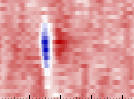

How features are calculated#
The main parameters used in driftplots are the spike amplitudes and depths,
as well as the unit templates. Below are details on how these are computed, as the methods
vary between SpikeInterface and Kilosort, and across Kilosort versions.
Glossary
spike : A single action potential, recorded on the probe and detected by the sorter.
unit : A putative neuron that generated a set of spikes. During sorting, each spike is assigned to a unit.
spike waveform : The waveform (i.e. voltage signal as recorded on the probe) of a single spike.
template : The canonical waveform that represents a unit. Can be thought of as the representative spike for a unit (e.g. often it is computed as the average of all spike waveforms for a given unit).
whitened template : A whitening transform is often applied to the data during preprocessing, to remove noise correlations between channels. Whitening has the effect of concentrating a spike waveform onto fewer channels and significantly changing the data scaling. Waveforms are often extracted from whitened data, meaning the unit templates are whitened. The whitening operation can be reversed by multiplication with the ‘inverse whitening matrix’.
PC features.
features.npycontains the PCA scores for each spike (i.e. by how much to scale the PC basis vectors to reconstruct the spike waveform). Here we refer to these as PC features similar to Kilosort.

An example waveform (y-axis is channel, x-axis is time).#
When passing a path to Kilosort output to DriftPlotter, all data is loaded in int16,
as it is saved on disk (no scaling to uV). If passing a SortingAnalyzer, the scaling
will depend on your data and the options chosen when creating the SortingAnalyzer.
In SpikeInterface, all spike amplitudes, depths and unit templates are
directly computed by the SortingAnalyzer, from the passed recording. They are
not directly reconstructed from the Kilosort output and can be quite different.
In general, spike amplitudes, depths and unit templates are calculated differently in SpikeInterface and across Kilosort versions and so are not directly comparable across sorters.
Amplitudes#
SpikeInterface
In SpikeInterface, the spike amplitudes are calculated as the trace value at the spike peak on the channel in which the associated unit template has the strongest signal.
Kilosort
Kilosort 1, 2
In Kilosort 1, 2 the amplitudes.npy file does not contain the actual spike amplitudes.
Instead, it contains a scalar used to scale the template to give the best fit
to the spike waveform. Therefore, taking the amplitude of the unwhitened template
scaled by this amplitude value will give the approximate spike amplitude.
This matches how amplitudes are calculated in Nick Steinmetz spikes repository and Phy.
Here, the amplitude is calculated as the peak-to-trough.
Kilosort 2.5, 3
The amplitudes.npy file and waveform reconstruction in Kilosort 2.5 and 3
in theory works the same as in Kilosort 1, 2. However, the inverse whitening
matrix saved in these versions is not the true inverse whitening matrix, but
instead a scaling matrix (see
here
and here).
As the amplitudes are computed from waveforms unwhitened by this incorrect inverse whitening matrix, the amplitudes are probably not a good approximation of the true spike amplitudes. Nonetheless the computed amplitudes should be comparable across sessions sorted by the same sorter, but not other sorters.
Kilosort 4
In Kilosort 4, the amplitudes.npy does not contain a scaling value
as in previous Kilosort versions. Instead, it calculates a proxy for
the amplitude as the L2 norm over the PC features
(over both all channels and all PCs) i.e. like an energy over the feature space.
To approximate the spike amplitude, we use the method described in this Kilosort issue. We are currently investigating how this method compares to SpikeInterface and other Kilosort versions.
Templates (interactive mode)#
When DriftPlotter is passed a path to Kilosort 1-3 output, the whitened templates are always displayed.
Here the template is the universal or learned canonical waveform for each unit, used in Kilosort’s template matching.
These templates remain whitened, as it is not possible to unwhiten the templates in Kilosort 2.5 and 3 due to the missing inverse whitening matrix, as mentioned above.
In Kilosort 4, the unit templates are the average spike waveform (reconstructed from PCs) (after whitening, filtering, and drift correction). These are also displayed in their whitened form.
The displayed unit templates are not scaled to the clicked spike amplitude, because to the authors’ knowledge this scaling value is not available in Kilosort 4.
When passing a SortingAnalyzer, the displayed templates are taken from
the "templates" extension. Whether the templates are whitened or unwhitened
will depend on the preprocessing chain used for the recording passed to the
SortingAnalyzer, on which the templates are computed.
Spike Depths#
In general the depth (y-position) of each spike is estimated from its waveform.
In Kilosort 1-3, the center of mass of the PCA scores (found in features.npy)
is used, as computed in
Nick Steinmetz’s spikes repository.
and Phy.
In Kilosort 4, we use the saved values from spike_positions.npy.
In SpikeInterface, the depths are taken from the "spike_locations" extension.